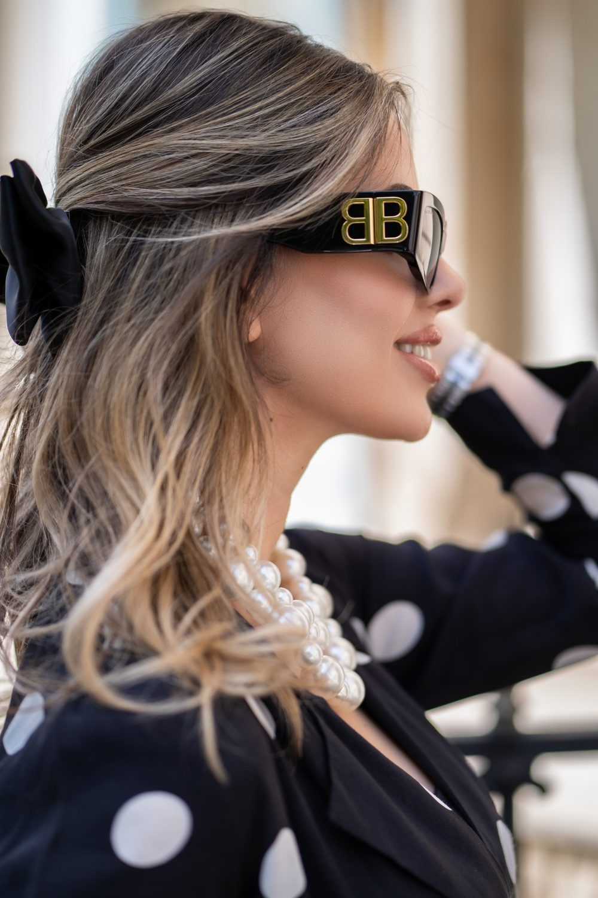
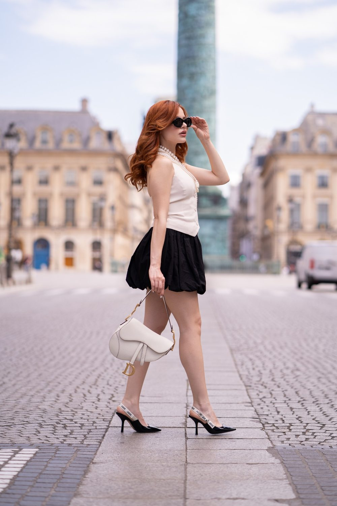

Portrait solo à Montreuil
Un portrait de vous, pour vous : un beau jour, une envie, un cap passé. Une séance solo se vit comme une promenade où vous reprenez la place centrale. Une séance à Montreuil, c'est aussi la possibilité de varier les ambiances entre Place Jean-Jaurès et Quartier de la Boissière.

Où faire votre shooting
Un portrait solo à Montreuil se vit comme une balade créative entre ruelles et jardins. Commencez dans le Quartier de la Boissière : une marche entre les pavillons met en confiance et donne des images spontanées. Arrêtez-vous ensuite aux Murs à pêches, adossé au plâtre chaud, pour des portraits plus posés. Quelques plans vidéo, regard vers l'objectif ou perdu dans les jardins, racontent ce moment où vous reprenez la place centrale.
Nos lieux pour cette séance
Place Jean-Jaurès
Marché et mairie. Une rue au caractère affirmé pour un portrait urbain et naturel.
Quartier de la Boissière
Ruelles et pavillons.
Murs à pêches
Jardins historiques et murs de plâtre. Un jardin ou un parc pour un portrait doux et lumineux, avec de la verdure derrière vous.
Parc des Beaumonts
Colline et vue sur Paris.
Pour que tout se passe bien
Créatif, vert, avec des murs de plâtre. Les murs à pêches sont chauds en fin de journée.
Pas besoin d'être modèle. Nous vous aidons à trouver votre posture, à choisir des tenues, à passer de la gêne au naturel. Nous parlons, nous marchons, nous laissons les images venir.
Pour un portrait solo aux Murs à pêches, venez en fin de journée : le plâtre chauffe la lumière et flatte la peau. Apportez deux tenues et changez-vous dans le Quartier de la Boissière avant la dernière partie.
À Montreuil, vous êtes à Métro Mairie de Montreuil, Croix de Chavaux : nous préparons l'itinéraire entre les lieux avec vous.



Avant de nous écrire
Où faire un shooting photo solo à Montreuil ?
Un shooting photo solo à Montreuil peut associer le Quartier de la Boissière, pour ses ruelles et pavillons, et les Murs à pêches, pour leurs murs de plâtre chauds en fin de journée. Le parcours se fait à pied, à votre rythme.
Faut-il poser pour un portrait solo à Montreuil ?
Non, un portrait solo à Montreuil ne demande pas d'expérience de pose. Nous vous guidons pendant la marche dans le Quartier de la Boissière et aux Murs à pêches, et les images naissent surtout des déplacements et des échanges.
Comment venir à Montreuil ?
Métro Mairie de Montreuil, Croix de Chavaux. Nous nous déplaçons avec notre matériel photo et vidéo.
Livrez-vous des retouches poussées ?
Nous faisons une retouche naturelle. Une retouche plus poussée peut être discutée sur devis.
Parlons de votre mariage
Demander un devisSolo ailleurs en Île-de-France
© Le Couple Photographe · Photographe de mariage Paris & Île-de-France · Mis à jour le 10 octobre 2026
Demander un devis